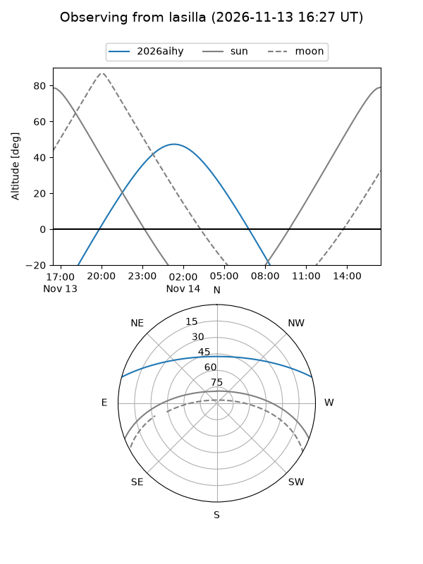
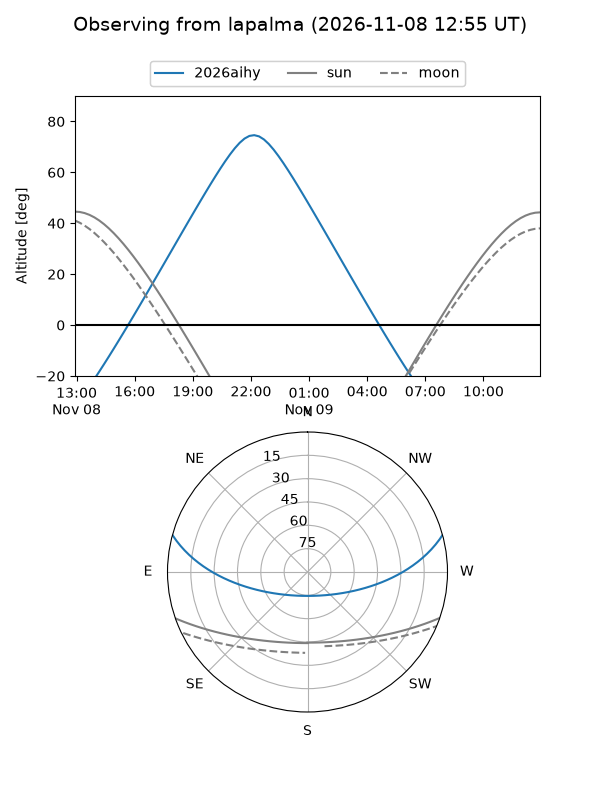
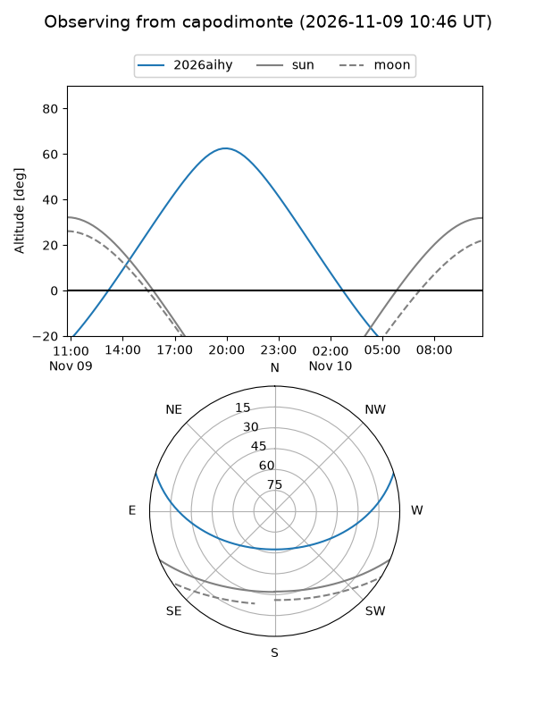
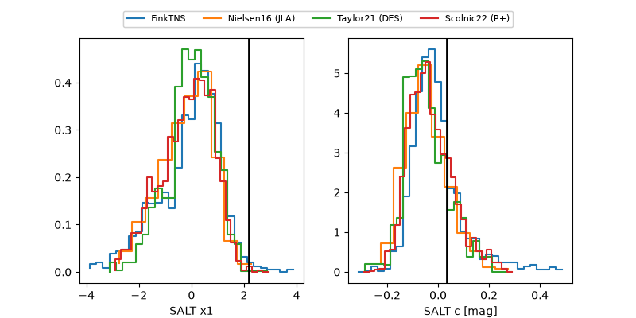

2026aihy
Target 2026aihy at 2026-11-07 09:19
Aliases and brokers:
FINK-ZTF: ztf.fink-portal.org/ZTF26aceduws
Lasair-ZTF: lasair-ztf.lsst.ac.uk/objects/ZTF26aceduws
ALeRCE-ZTF: alerce.online/object/ZTF26aceduws
YSE-PZ: ziggy.ucolick.org/yse/transient_detail/2026aihy
TNS name: wis-tns.org/object/2026aihy
Direct TNS query: direct search
alt names
ZTF26aceduws (ztf,fink_ztf)
2026aihy (tns,yse)
Coordinates:
equatorial (ra, dec) = 1.9741,+13.22794
equatorial (HMS+DMS) = 00:07:53.78,+13:13:40.58
galactic (l, b) = (106.8950,-48.28335)
Flags:
peak dt: -0.3
Photometry:
last ztfg=19.52, ztfr=19.40
4 ztfg, 3 ztfr detections
Lightcurve
Visibility



Additional plots
